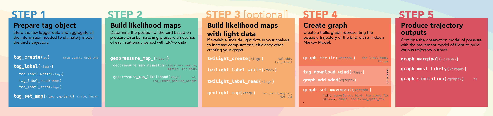

geopressuretemplate("18LX")13 Workflow
The GeoPressureR workflow follows a series of functions taking as input the raw data, the labels, and the configuration, to produce trajectory outputs.
Extract of the GeoPressureR cheatsheet illustrating the workflow
13.1 Presentation of geopressuretemplate()
After performing all preparation steps, you are able to run the entire workflow in a single line:
The geopressuretemplate() function calls on three child functions outlined below. data/interim/{id}.Rdata is created in Step 1, and then updated in steps 2 and 3 with the main variables (see below).
1. geopressuretemplate_tag()
-
tag_create(): Initializes the tag object. -
tag_label(): Adds labels. -
tag_set_map(): Sets the spatial and temporal parameters. - *
geopressure_map()Computes the pressure likelihood. - *
twilight_create()|>twilight_read()|>geolight_map(): Computes the light likelihood.
2.geopressuretemplate_graph()
-
graph_create(): Creates the graph based on tag. - *
graph_add_wind(): Adds wind data to the graph. -
graph_set_movement(): Sets the movement model - *
graph_marginal(): Computes the marginal distribution map. - *
graph_most_likely(): Computes the most likely path based on the movement model. - *
graph_simulation(): Runs simulations to model multiple possible paths.
3.geopressuretemplate_pressurepath()
Compute pressurepath pressurepath_create() of the path_most_likely and/or the path_geopressureviz. Learn more about pressurepath in the Pressurepath chapter.
13.2 Configuration the workflow
All parameters of the workflow’s function are provided in the config.yml file following the structure:
tag_id:
function_name:
argument: valueOn top of all GeoPressureR functions, you also need to provide general workflow parameters in geopressuretemplate:
default:
geopressuretemplate:
likelihood: ["map_pressure", "map_light"]
outputs: ["marginal", "most_likely", "simulation"]
pressurepath: ["most_likely"]likelihood define which likelihood map to compute and use in the graph model while outputs define which outputs to use. In pressurepath, you need to set which path to use. The path can also be visualised using GeoPressureViz.
You can check the configuration used with:
geopressuretemplate_config(id)This is constructed by combining the default parameters used in GeoPressureR overwritten by the parameters you’ve written in config.yml in the config default and overwritten by the config 18LX.
13.3 Tag
The tag workflow simply consists of preparing the tag data and computing the likelihood map.
tag <- geopressuretemplate_tag(id)At the end of each geopressuretemplate function the interim file (e.g. data/interim/18LX.Rdata) is create or updated. Next geopressuretemplate functions will re-use this file to load variables.
13.4 Graph
The graph workflow uses the tag computed before to create the graph and produce the outputs according to what you defined in geopressuretemplate in config.yml
graph <- geopressuretemplate_graph(id)Because the construction of the graph can be a bit more complicated and takes a lot of time, we’ve implemented a tryCatch approach which returns the graph in case the code fails during the processing so that you can troubleshoot the problem more easily.
13.5 Pressurepath
geopressuretemplate_pressurepath(id, quiet = FALSE)13.6 Outputs
All the information needed for your analysis should now be contained in ./data/interim/18LX.RData